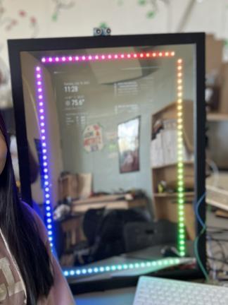

The Magic Mirror is a mirror that displays and self-updates with widgets of information. Taken from my to-do list, weather, and calendar, the concept originates from being able to get up and ready while seeing a day’s information at a glance, consolidated all onto one screen.
In order to display the monitor, a one-way mirror was utilized so the user could see their own appearance while seeing the monitor’s information. The monitor’s brightness was intricately modified so the display could not be seen. An external API was implemented so it could pull information from the weather app, calendar, and to-do list. The wooden frame was cut to custom-fit around the monitor. Additionally, it was painted black to blend in with the monitor. Grooves were made in the wood to hold the LED strip. The LED strip’s customizable nature allows various “moods” of color to be displayed, from monochromatic hues to patterns dancing across the mirror.
As technology becomes increasingly advanced, this project incorporates the idea of how it is able to automate and make parts of our lives more efficient. However, this did require a lot of access to my personal information, such as my location, what I need to do, and even how I spend my time. Ultimately, this project begs the question of where we should draw the line of integrating technology and how we should use it.